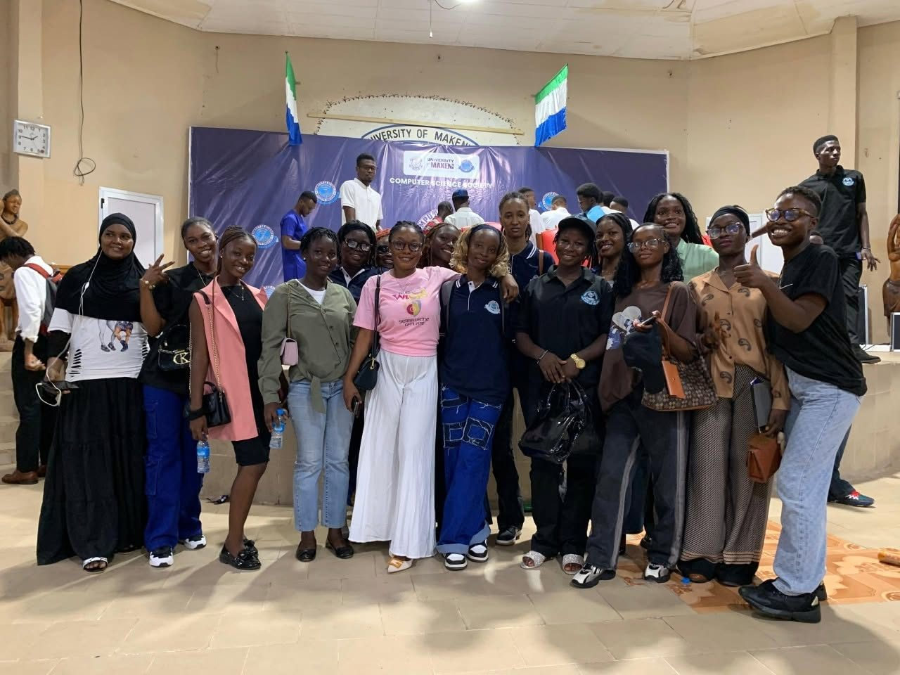

Primary school
Planned activities include safe password habits, spotting suspicious messages, and knowing when to ask a trusted adult.
Activity photos will appear here after a school visit and publication approval.
See the planned CyberSafe lessonsLearning and outreach
Find school outreach, university activities, skills training, and community learning. Each activity shows its current status.
School outreach
For younger learners: age-appropriate cyber safety lessons, interactive quizzes, school cyber clubs, teacher collaboration and supervised activities. Requests should be submitted by an authorized adult representative.
Planned activities include safe password habits, spotting suspicious messages, and knowing when to ask a trusted adult.
Activity photos will appear here after a school visit and publication approval.
See the planned CyberSafe lessonsPlanned activities cover privacy, safe social media use, scam recognition, and routes into cybersecurity.
Activity photos will appear here after a school visit and publication approval.
See the planned CyberSafe lessonsCampus network
For university and college communities: campus ambassadors, academic collaboration, student projects, skills workshops and eligible competitions. Official WiCyS Student Chapter status requires Global approval.

University of Makeni activityView the campus activitySkill development
Proposed learning tracks for foundational digital safety, networking, Linux, Python, secure coding, security operations and AI security. Published workshops will appear when dates and trainers are confirmed.
Community awareness
Accessible guides and community workshops on phishing, social media safety, privacy, scams and mobile-money fraud prevention, with English and Krio materials where possible.
2026 school outreach · In planning
Through WiCyS and SentinelOne, the campaign brings age-appropriate online safety lessons and cybersecurity career awareness to school classrooms. WiCyS Sierra Leone is planning local delivery. The school, date, and participating year groups are pending confirmation.
The campaign provides K–1 and grades 2–4 materials for introducing online safety and trusted-adult support.
Grades 5–8 and high school materials build on digital safety and introduce cybersecurity careers.